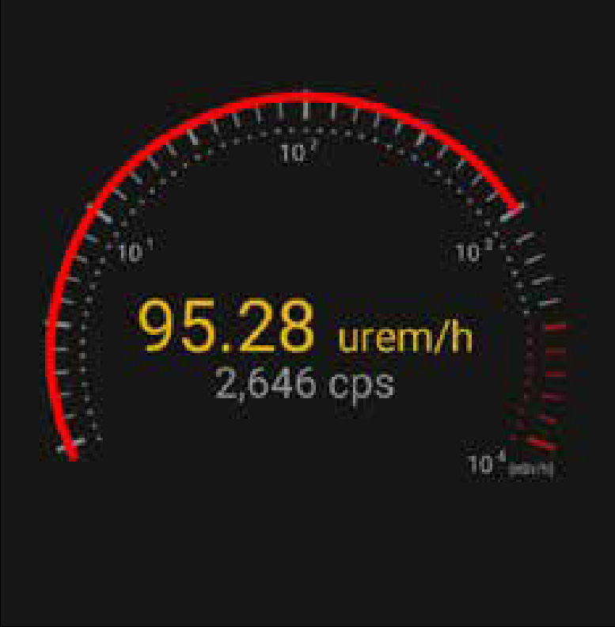
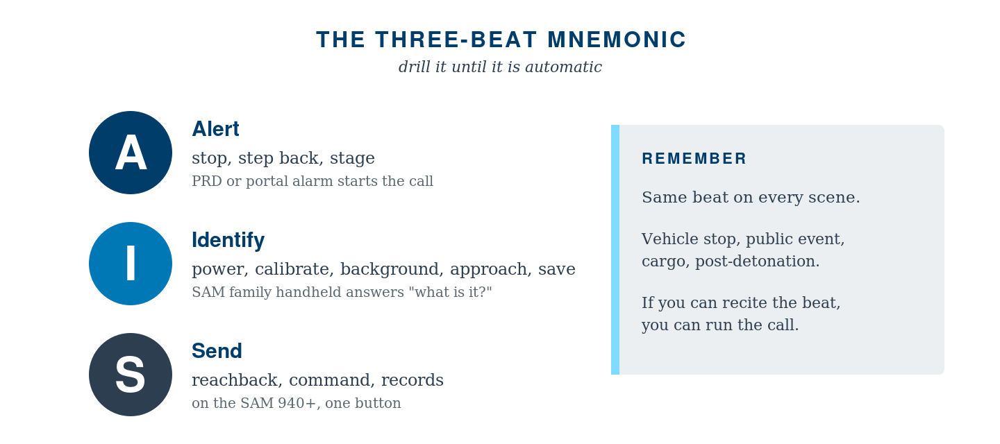

This is the chapter every operator should be able to recite. The three-beat rhythm, alert, identify, send, is the same on every scene, regardless of the scenario. Master it once and the SOPs in Part III feel like variations on a theme.
5.1 ALERT: When Something Trips
An alert is any signal, from any source, that radiation may be present at a level above expected background.
Sources of alert in a typical program:
- Officer's PRD chirps during a vehicle stop
- Stationary portal monitor flags a pedestrian or vehicle
- Survey meter reads above an action threshold during routine sweep
- Witness report (citizen sees a labeled package, an open shipping container, a yellow trefoil)
- Intelligence-driven assignment from command
- Suspicious-package call where radiation is one of several modalities being checked
The 60-second alert response:
1. Stop. Don't keep advancing toward the suspected source.
2. Step back. Inverse-square law works in your favor.
3. Note. Time, location, who alarmed, what the reading was, weather, anything in the area that might be a NORM source.
4. Communicate. Dispatch + supervisor + adjacent units. Make sure someone outside the cordon knows the situation.
5. Stage. Position the SAM handheld and any RD-150 resources between you and the source, or upwind, on a clear approach line.
6. Document. Begin the timeline. Every minute thereafter gets logged.
Rule: No one approaches the source until a RIID is en route. The PRD has done its job. The next instrument up the ladder takes the next step.
5.2 IDENTIFY: Putting the RIID To Work
The handheld RIID, your SAM 940/945 or SAM 950, is designed to give a confident isotope identification in a span of seconds to a few minutes. There are five steps. Run them every time, in this order.
Step 1. Power-on and Self-Test
Turn the unit on. Confirm the self-test completes without errors. Confirm:
- Battery > 20% (preferably > 50%). If lower, swap batteries before scanning.
- Date and time are correct. Spectra without a correct timestamp are difficult to use in court or in reachback.
- GPS has lock. Outdoors, this should happen within seconds. Indoors, expect to lose GPS or use last-known.
- Spectrum store has space. If full, archive or transfer before continuing.
Step 2. Calibration Check
Most modern SAM family units perform automatic gain stabilization using internal references, the operator does not run a manual calibration on every shift. However, you should confirm the unit has stabilized and is reporting a normal energy scale.
If the unit has just been powered on after time in a cold vehicle or a hot trunk, allow it to settle (1–5 minutes typically).
If your program uses a shift-start check source (small Cs-137 or Co-60), now is the moment to verify the photopeak appears at the expected channel/energy.
If the photopeak is off, e.g., 662 keV showing as 640 keV, let the unit re-stabilize and repeat. If still off, take the unit out of service and use a backup.
Step 3. Acquire Background
Move to the cleanest area you can reach (relative to the suspected source) and acquire a background spectrum. Most units have a "background" mode that takes 30–120 seconds.
Why this matters: the unit subtracts background to find peaks above the natural radiation field. A bad background equals a bad ID.
Stand far enough from the suspected source that you read normal ambient (5–15 µR/hr is typical).
Stand far from large concrete or stone structures if you can, they can elevate background.
Save the background. Many units will reuse it; many will warn you when the field changes meaningfully.
If you cannot acquire a clean background, for example, the entire scene is hot and there is no clean approach, note that fact and proceed. Reachback can compensate, but they need to know.
Step 4. Approach and Scan
This is the moment most operators worry about. They shouldn't, if they remember TDS.
Distance. Bring the unit to a position where the count rate is well above background but personal dose rate is acceptable. For most legitimate sources, you can scan from 0.5–2 m and get a clean spectrum without exceeding routine limits.
Time. Allow the scan to run until the confidence threshold is met. Some isotopes (Cs-137, Co-60) identify in seconds. Some (mixed sources, low-yield, masked) take longer. Do not pull the trigger early.
Geometry. A consistent geometry helps. If the source is in a vehicle, place the unit on the seat or against the door. If in a package, place it on the surface or use a stand. Avoid waving the unit; let it rest.
Do not get closer than necessary. "I'll just hold it right against it" is how operators take dose they don't need.
While scanning, watch the screen:
- Count rate, should be above background.
- Dose rate, your personal safety indicator.
- Isotope name(s) appearing, initially low confidence, building.
- Spectrum view, peaks should grow taller and narrower as counts accumulate.
Step 5. Confidence and Save
When the unit declares an identification with confidence above the threshold (every model uses a scale; "high" or a checkmark or a specific score, depending on firmware), confirm and save.
Save the event. Most units do this with a single button. The save captures spectrum, dose rate, GPS, time, and any operator notes you've entered.
Photograph the source/cargo. A picture is part of every event.
Add operator notes if the unit supports them (e.g., "tractor trailer, manifest indicates oilfield equipment, no driver present").
If the unit cannot reach confidence in a reasonable time:
- Verify you have a clean background.
- Try moving closer (within ALARA).
- Try a longer dwell.
- Consider that you may have a mixed or shielded source, note it and prepare for reachback.
BNC in Practice: Building Confidence Under Low Count Rate
Two minutes of dwell at 0.5 m beats 30 seconds at the source for ALARA. If confidence is stuck below threshold, first verify your background is clean (re-acquire if you moved). Then check geometry: the unit should be still, not waving. Move closer only if dose rate at the new position is acceptable. If you have done all three and confidence is still low, mark it as a candidate for reachback and send the spectrum with your notes.
5.3 SEND: Spectrum to Expert, Result to Command
A clean identification on scene is half the win. The other half is getting that information to the right people in a form they can act on.
Three audiences for "send":
Reachback (radiological expertise). A licensed health physicist or an operations center physicist can review the spectrum and confirm or refine your identification. On the SAM 940+, this is a one-click operation, the spectrum, photo, GPS, and scene notes travel as a single packet to your reachback channel without the operator leaving the scan screen. The SAM family supports spectrum file export in standard formats; transmit via your agency's preferred channel, secure email, dedicated cloud upload, or direct device-to-server connection.
Incident command. The IC or appropriate supervisor needs the headline: "Cs-137, high confidence, ~350 µSv/hr at the housing, consistent with industrial gauge." Plain-language summary first, technical detail second.
Records of the event. Department records, possibly a state health department report, possibly a federal incident report. Save everything. Spectra, photos, notes, dose readings, names, times.
A good "send" packet contains:
- Spectrum file (ANSI N42.42 XML or vendor-native, per reachback preference)
- Photograph(s) of the source/scene
- GPS coordinates of measurement
- Time of measurement
- Dose rate at measurement point and at perimeter
- Background spectrum (if acquired separately)
- Operator notes, what you know, what you suspect, and what you do not know
- Contact information for the on-scene operator
A good reachback partner can return a confirmation, a refined ID, or a "we need more" within minutes, but only if your packet is clean.

A SAM gauge view at an elevated reading, 95.28 µrem/h at 2,646 cps. The red sweep at the right of the dial tells the operator at a glance that they are well above background.
5.4 The Spectrum: What Operators Should See
Every operator should be able to glance at a spectrum and say something true about it. You don't need to be a spectroscopist; you need to recognize the obvious.
A single clean photopeak with a smooth Compton continuum below it = simple single-isotope source.
Going Deeper: Reading the Compton Edge
When a gamma scatters in the crystal and escapes before depositing all its energy, the partial deposit shows up at lower energy. The maximum back-scatter (180 degree scatter) defines the Compton edge, a step in the spectrum at E_c = E_gamma * (1 - 1/(1 + 2*E_gamma/511)). For Cs-137 at 662 keV, E_c is about 478 keV. Operators who can spot the Compton edge at the right energy gain a quick sanity check on the photopeak fit.
Multiple distinct peaks at characteristic ratios = a known multi-line isotope (e.g., Co-60 has two well-known photopeaks; Eu-152 has many).
Low broad bumps at the low end of the spectrum = scattered radiation; check shielding/geometry.
A peak that doesn't match anything in the displayed ID = something unusual; mark it, send it.
No peaks at all, just a smooth continuum = either too few counts (give it more time) or you're in pure background.
5.5 Common Pitfalls in the Identify Step
Calling it before confidence builds. The unit's job is to be sure. Yours is to wait.
Scanning while walking. Don't. Set the unit down or hold it stably.
Trusting the screen blindly without looking at the spectrum. Two seconds of glance can save a misread.
Forgetting to save. "I had it, then I closed the screen and lost it." Don't.
Skipping background because the source is obvious. Even an obvious source produces a cleaner ID with a current background.
5.6 The Three-Beat Mnemonic

The Three-Beat Mnemonic. Drill it until automatic.
Drill this. Make it automatic. Then read Part III, where it gets applied to the four scenarios you are most likely to face.
Chapter 5 Quick Check
The three-beat rhythm of every scene is:
Detect, dose, decide
Alert, identify, send
Find, fix, finish
Survey, scan, sample
Before scanning a suspected source, the operator must first:
Acquire a clean background spectrum
Photograph the scene
Power-cycle the unit
Notify command of the upcoming scan
If identification confidence stays below threshold, the right move is to:
Pull the trigger early and report
Verify background is clean, check geometry, then dwell longer or close distance within ALARA
Switch to a different RIID
Conclude the source is masked SNM
A clean reachback packet contains:
Only the spectrum
Spectrum, photo, GPS, time, dose at multiple distances, and operator notes
Just the operator's verbal summary by phone
The spectrum and a federal incident number
Which spectrum feature most reliably indicates a single-isotope source?
A flat continuum
A clean photopeak with the expected Compton continuum below it
Multiple low-energy bumps
An uneven baseline
Test Yourself
Prefer to answer on screen? Take the interactive quiz → Click an answer for each question, then check your score. Your answers are saved on this device.